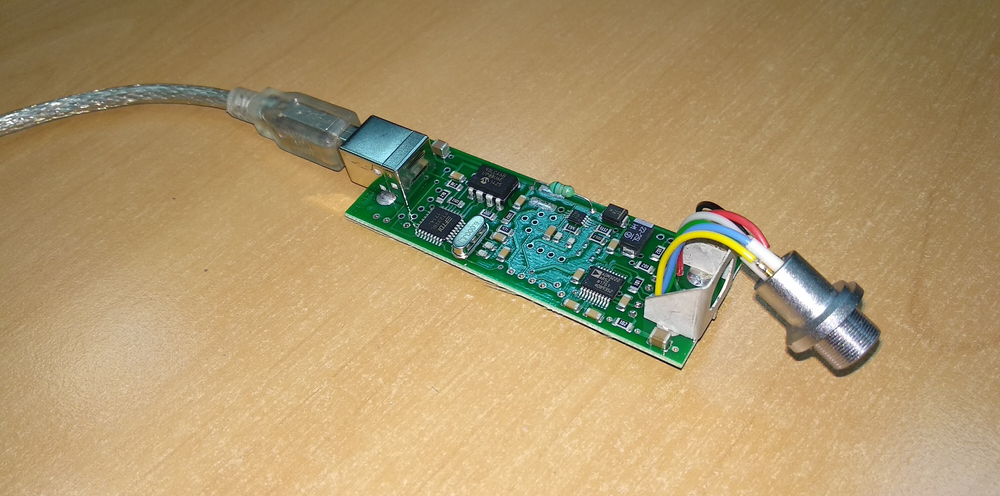
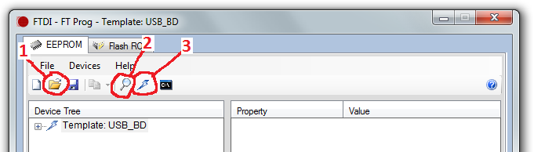
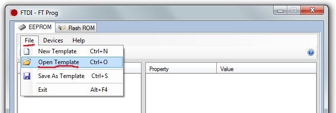
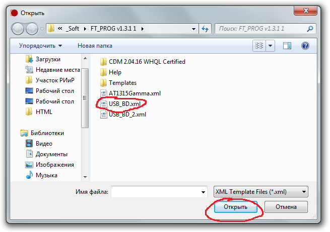
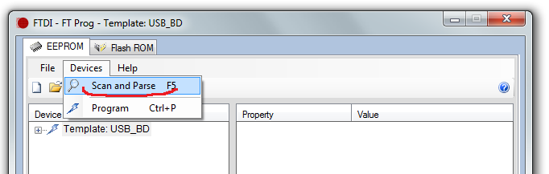
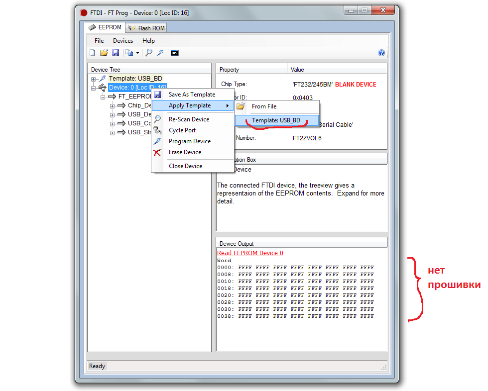
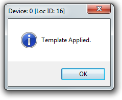
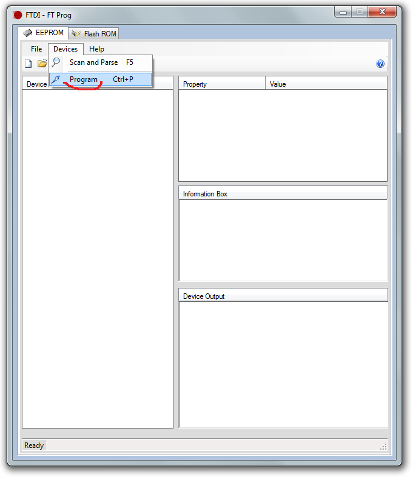
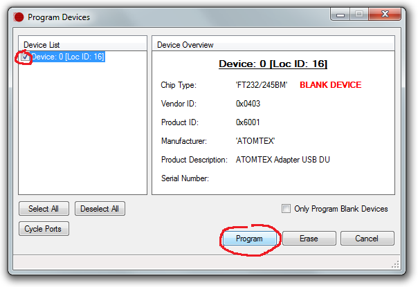
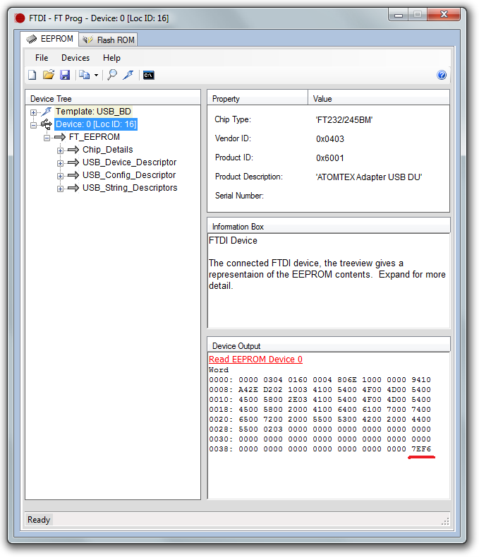

Адаптер USB-БД. Прошивка
- Подключить адаптер к компьютеру с помощью USB кабеля 
- Открыть программу FT_PROG 
- File → Open Template → выбрать USB_BD.xml [1]  
- Device → Scan and Parse [2] 
- Выделить Device, затем в контекстном меню выбрать Apply Template → Template USB_BD 
- Появится окно "Template Applied" 
- Device → Program [3] 
- В появившемся окне выбрать устройства, которые необходимо прошить, нажать Program 
- В поле Device output проверить последние 4 знака. Должны быть 7EF6 
Если взять несколько USB-кабелей, то можно будеть прошивать сразу несколько адаптеров — скорость работы
увеличиться в несколько раз